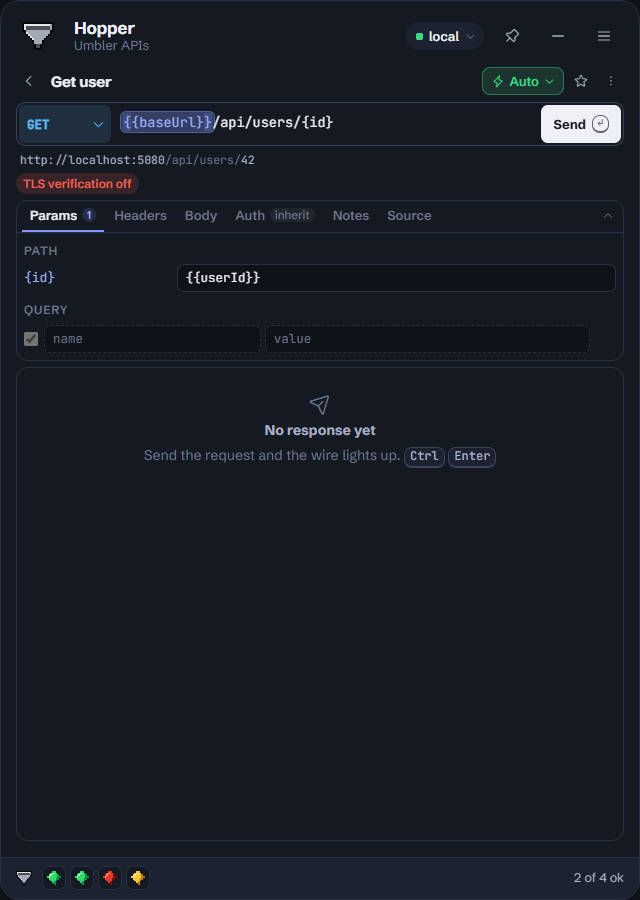
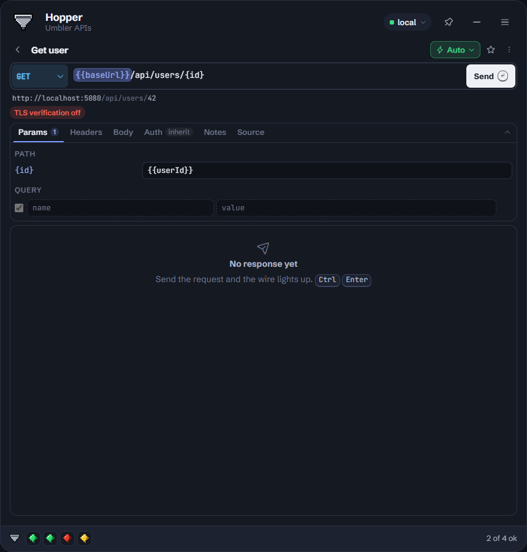
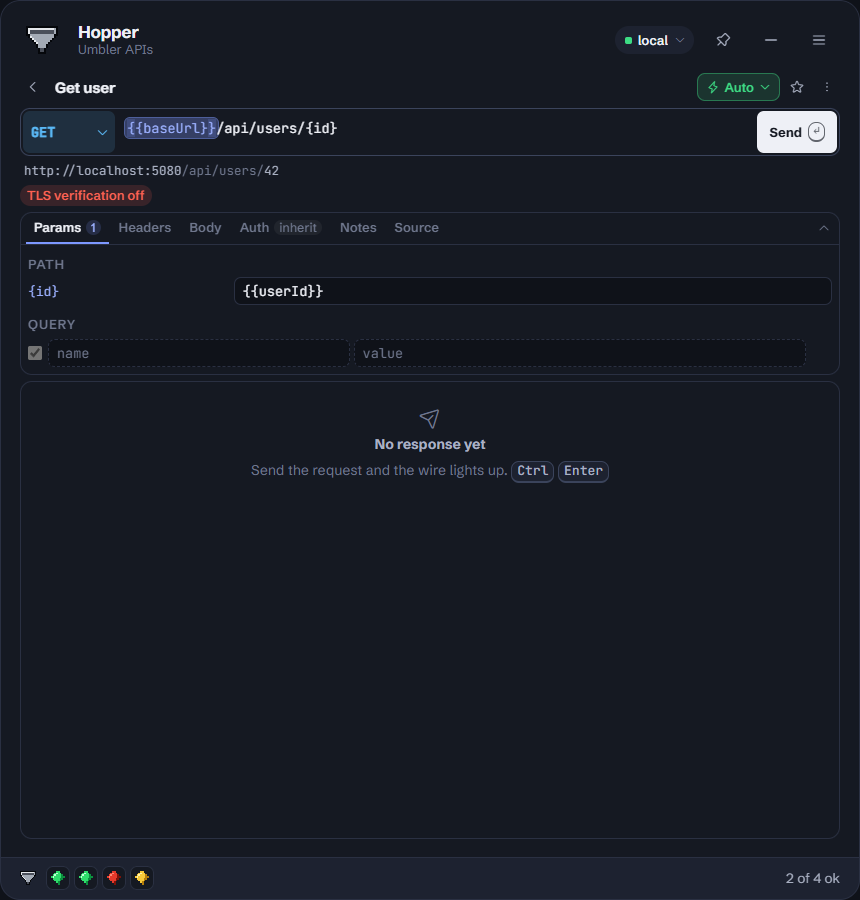
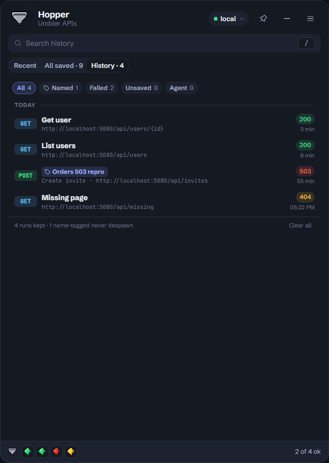
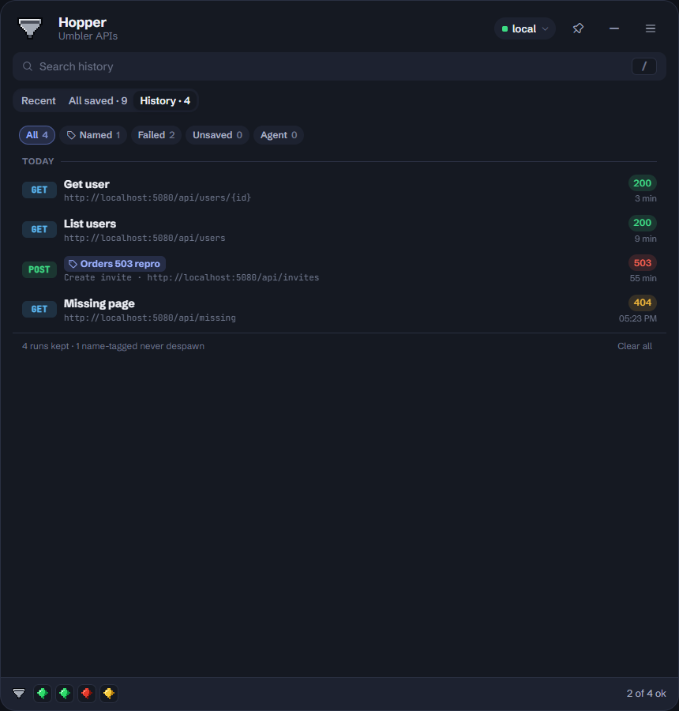
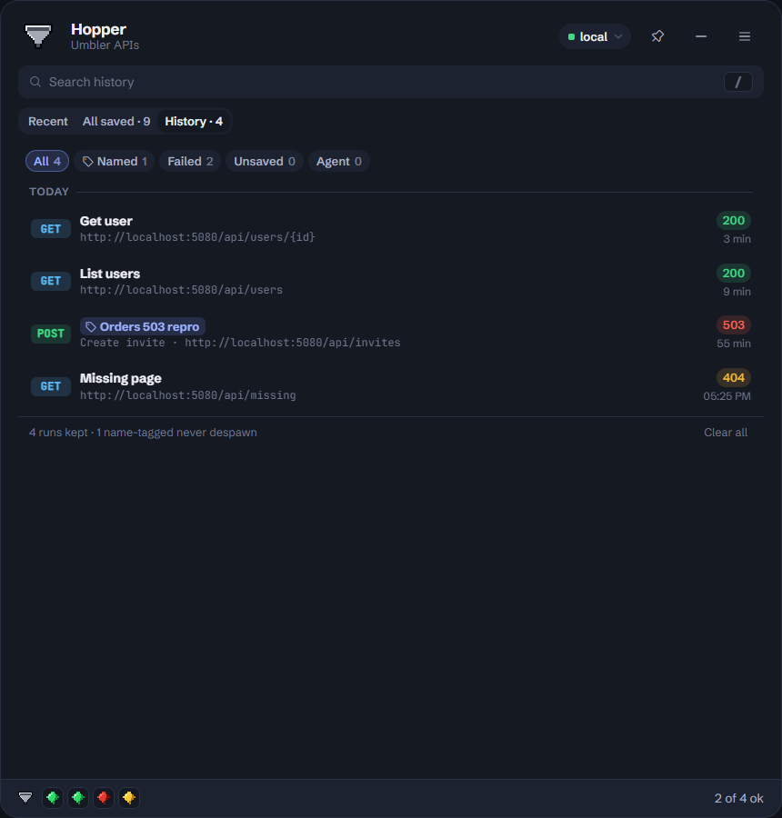
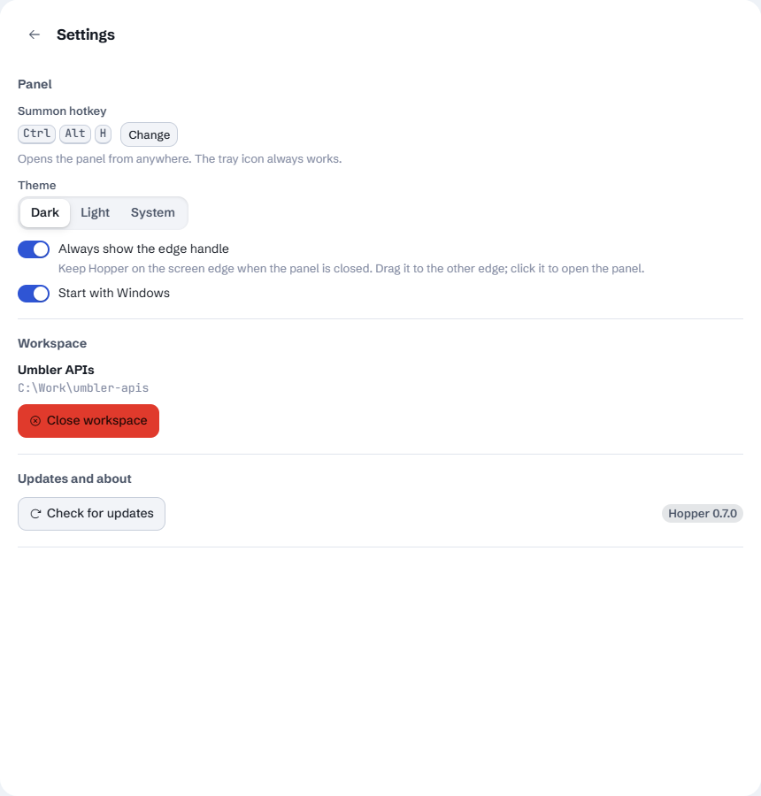
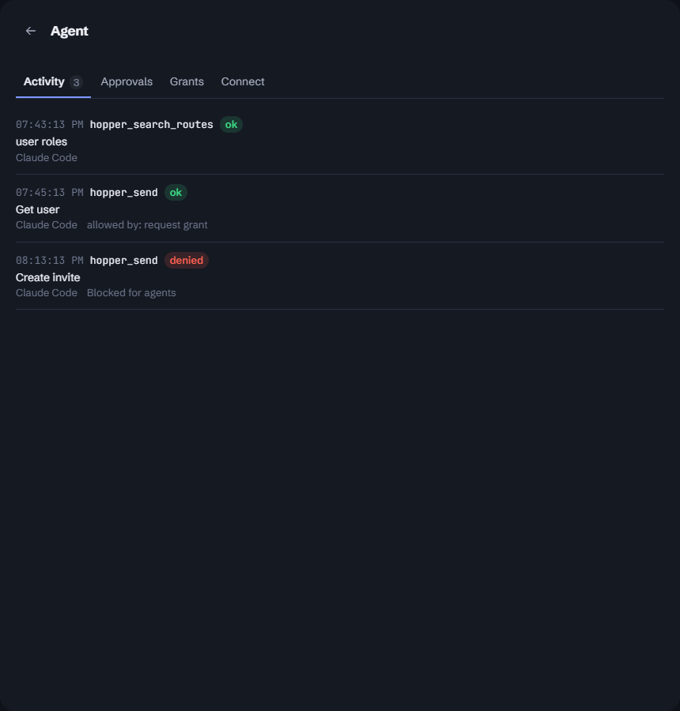

Panel size
The panel is as tall as the screen, so it gains room in width. Three options, shown with the mock backend at 900 px high.
A · Today- 640 px wide
- 16 px padding, 36 px controls
- Secondary text at 11–12.5 px
B · Wider only- 860 px wide (the existing Wide preset)
- Spacing and type unchanged
- Rows stay tight, small text stays small
C · Wider and comfortable (built)- 860 px wide
- 20 px padding, 38 px controls, taller rows
- Text under 13 px gains 1 px
Request editor
A · Today
B · Wider only
C · Wider and comfortable
History
A · Today
B · Wider only
C · Wider and comfortable
Option C in light, and the sheets
Settings sheet, light
Agent sheet, dark